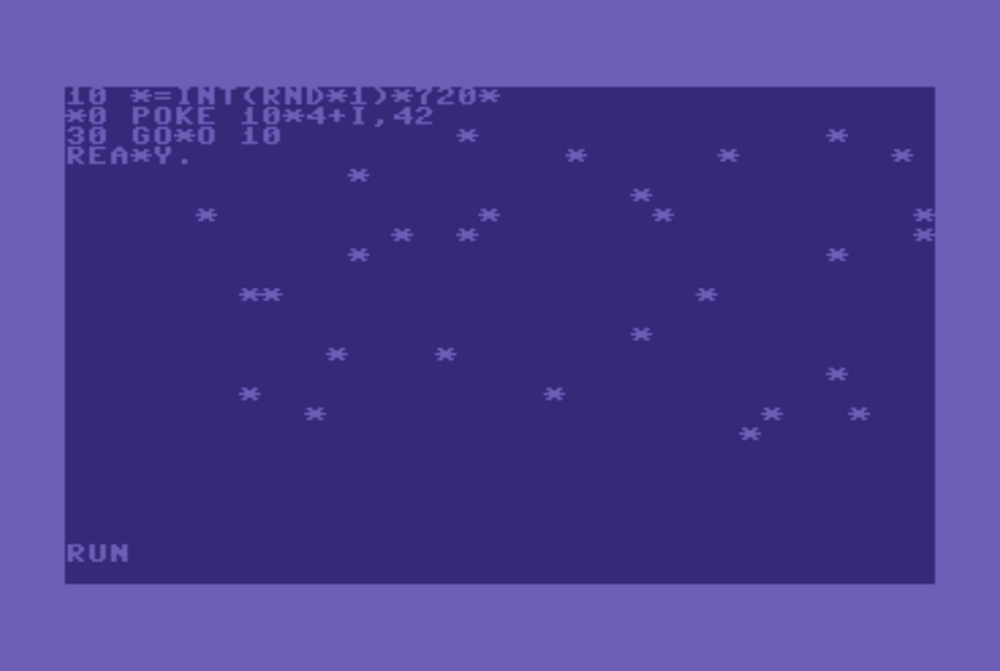
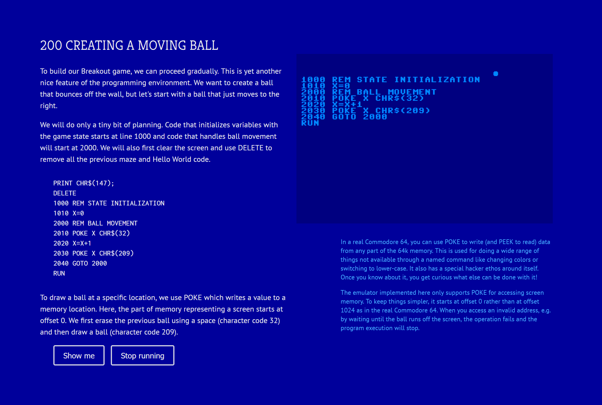

NPRG077
TinyBASIC: Tiny interactive
imperative programming system
Tomáš Petříček, 309 (3rd floor)
petricek@d3s.mff.cuni.cz
https://tomasp.net | @tomaspetricek
https://d3s.mff.cuni.cz/teaching/nprg077


Dijkstra on BASIC
It is practically impossible to teach good programming to students that have had a prior exposure to BASIC: as potential programmers they are mentally mutilated beyond hope of regeneration.
BASIC as a language? Meh.
Why look at BASIC?

BASIC as a programming system
- Right at the birth of microcomputers
- Part of an early computing culture
- Interesting mode of interaction!
BASIC as a programming problem
- Interpreter with richer state
- Statements vs. expressions
- More interesting F# programming!
BASIC
Interaction and emulators

Demo
Writing BASIC in C64 emulator
Realistic machine-level system emulator
All the clever hacks with POKE work!
See: C64 emulator
What is interesting about it?

Learnability
- Your computer boots into BASIC
- Copy games code from magazines
From novice to hacker
- Simple, but you can do lots with
POKE
Interaction mode
- Code editor and REPL at the same time

Demo
My C64 essay
Explore the interaction
How it helps write, test and debug code?
Not fully accurate
Program does not live in memory, POKE offsets are wrong
The F# language
What you need to know
TinyBASIC
What F# do you need to know
- Project, console and tail recursion
- F# language logic and data types
- Records, functions, tuples, patterns
- List processing using built-in functions
Demo
Project, console, recursion
let point = (1, 10)
let (x, y) = point
(* (int*int) -> (int*int) *)
let rotate (x, y) = (y, x)
(* int -> (int*int) -> (int*int) *)
let moveX by (x, y) = (x + by, y)
(* (int*int) -> int *)
let area (x, y) =
match x, y with
| 0, _ | _, 0 -> 0
| x, y -> x * y
(* (int*int) -> int *)
let area pt =
match pt with
| ((0, _) | (_, 0)) -> 0
| x, y -> x * y
Tuples, patterns and functions
Tuple type int * int is just another ordinary type of values
Pattern (x,y) can appear in multiple locations in code
Functions can mix arguments and tuples
SKETCH
Tuples and patterns
let l1 = [1; 2; 3; 4]
let l2 = 1::2::3::4::[]
let l3 = [1..4]
(* Pattern matching lists *)
match list with
| [e1; e2] -> (...)
| el::els -> (...)
| [] -> (...)
(* Possible, but not very useful *)
let (e::es) = list
let foo [e1;e2] = (...)
(* Higher-order list functions *)
let twice x = x * x
List.map twice [1..10]
List.map (fun x -> x * x) [1..10]
List.sum [1..10]
List constructors and list patterns
List type written as
list<int> or int list
Constructed using :: (rare) and
[..] (often)
Patterns :: and [..] can appear anywhere, but are partial
Demo
Real-world list processing

The pipe operator
Fluent style for functional data processing
let (|>) x f = f x
In bash scripting (|), adopted by R (%>%), maybe JavaScript
Demo
Real-world list processing (2/2)
TinyBASIC
Interpreter structure
type Value = (* .. *)
type Expression = (* .. *)
type Command =
(* Jumps and subroutines *)
| Goto of int
| GoSub of int
| Return
(* I/O operations *)
| Clear
| Print of Expression list
| Input of string
(* If, variables and control *)
| If of Expression * Command
| Assign of string * Expression
| Run
| Stop
BASIC interpreter structure (1/2)
Expressions evaluate to Values and are simple
Commands contain all the operations that modify the program state
(* State of the interpreter stores
program lines as sorted list,
variables in a dictionary,
generator for the RND function
and stack for GOSUB/RETURN *)
type State =
{ Program : list<int * Command>
Variables : Map<string, Value>
Random : System.Random
ReturnStack : int list }
(* Evaluate a command and then
run the next one (if any)
until the program ends.
: State -> (int * Cmd) -> State *)
let rec runCommand state (line, cmd) =
(* ... *)
(* Find the next line after 'line'
and run that or stop if none *)
and runNextLine state line =
(* .. *)
BASIC interpreter structure (2/2)
State is the program source code, variables
(and a few extras)
Current line is also
a part of the state
(function argument)
Demo
BASIC Hello World
TinyBASIC
How the BASIC language works
REM You can write comments!
REM Jumping and calls
GOTO 10
GOSUB 10
RETURN
REM Printing to the screen
POKE 1024 CHR$(42)
PRINT "HELLO ";X
REM Variables and ifs
X=10
IF (X>0) GOTO 10
REM Control
RUN
STOP
BASIC basics
GOSUB jumps, but keeps return location on stack
for RETURN
PRINT takes a sequence of expressions (and we ignore cursor moving)
POKE writes a byte to memory (we will cheat)
We ignore command chaining (:)
Demo
Elegant programs with GOSUB :-)
TinyBASIC
A bit of theory
Meaning of programs
Functional languages
- Compositional semantics
-
Define meaning of \(e_1 + e_2\) in
terms of the meaning of \(e_1\) and \(e_2\)
Imperative languages
- What is the meaning of
PRINT "HI"? - What is the meaning of
GOTO 10? - Whatever the interpreter does..
- Not very good for program proofs!
00 REM FACTORIAL IN BASIC
10 Q=5
20 N=1
30 F=1
40 IF N=Q THEN GOTO 100
50 N=N+1
60 F=F*N
70 GOTO 40
100 PRINT F
Reasoning about BASIC programs
Hoare triples \(\{P\}c\{Q\}\)
Pre-condition \(P\) what is true before the command execution
Post-condition \(Q\) what is true after the command execution

Reasoning about BASIC programs
Postconditions of a command before have to match preconditions of a command after
Coming up with the right properties is tricky!
Lab overview
TinyBASIC system step-by-step
TinyBASIC - Basic tasks
-
Add
GOTOand betterPRINTfor infinite loop fun!
Evaluation of expressions, finding of the next line -
Implement interactive program editing
Handle commands that edit the program code -
Add variables, conditionals, integers and bools
NeedsMap<string, Value>in the program state -
Random function and (not quite correct)
POKE
To be able to generate random stars! -
A few more functions and operators
As required by the Nim (subtraction) game
TinyBASIC - Bonus tasks
-
Add support for more elegant programs with GOSUB
Needslist<int>(stack of return line numbers) in state -
Refactor our Nim code sample to use it
Dijkstra will still not be happy, but we avoid repetition -
Implement an "AI" player for our Nim game
Wikipedia says this is a solved problem :-)
Closing
A tiny imperative programming system
Conclusions
A tiny interactive imperative programming system
- Evaluation logic not that far from TinyML!
- Imperative interpreter needs much more state
- How exactly interactive editing worked?!
- Parsing & interactive editing out of scope :-(
Tomáš Petříček, 309 (3rd floor)
petricek@d3s.mff.cuni.cz
https://tomasp.net | @tomaspetricek
https://d3s.mff.cuni.cz/teaching/nprg077